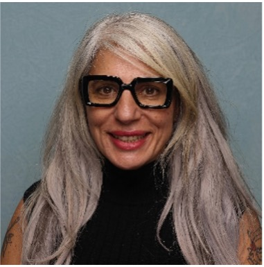
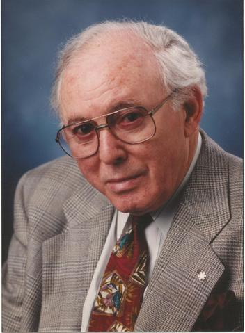

OCTOBER 2, 2026 | IN-PERSON EVENT
DELTA HOTELS – EDMONTON SOUTH CONFERENCE CENTER
Top of the Inn, 4404 Gateway Boulevard NW, Edmonton AB
Dr. Zayna Khayat, PhD, BSc, Dr. John Torous, MD, MBI, and Dr. Marlynn Wei, MD, JD
Minds by Design: An AI Approach to Mental Health Care

Dr. Zayna Khayat, PhD, BSc, is a health futurist in residence with the healthcare and life sciences practice of Deloitte in Canada where she guides individuals, companies, organizations, and governments in the sector on key trends and shifts that are reshaping healthcare, and how they can make smarter decisions today to be resilient to whatever futures unfold in healthcare and life sciences.
Dr. John Torous, MD, MBI, is the director of the digital psychiatry division in the Department of Psychiatry at Beth Israel Deaconess Medical Center. He completed his psychiatry residency, fellowship in clinical informatics, and master's degree in biomedical informatics at Harvard. He serves as editor-in-chief for the journal JMIR Mental Health, web editor for JAMA Psychiatry, and has published over 300 peer reviewed articles and book chapters.
Dr. Marlynn Wei, MD, JD, is a Harvard‑ and Yale‑trained psychiatrist, psychotherapist, and author working at the intersection of artificial intelligence, mental health, and ethics. Dr. Wei's work examines emerging clinical and ethical issues related to AI, including AI‑mediated therapy, AI‑associated delusions, and digital immortality. Dr. Wei is a contributor to Psychology Today.
Dr. Khayat – AI in Health Care – What is Now, Near & Next
Dr. Khayat will frame what AI is and discuss the history of its development, the types of AI, and where each type of AI is being deployed in healthcare in Canada compared to the rest of the world. She will explore what cases are "near and next", and the implications for patients, clinicians, organizations and health systems. Dr. Khayat will discuss the implications of AI on the human workforce and as well as the associated implications for how healthcare has historically been designed, delivered and paid for.
Dr. John Torous – AI and Mental Health: Opportunities, Risks and the Path Forward
Dr. Torous will discuss the current evidence on how AI, especially LLMs, are being used in mental health care, including what is feasible today and what remains uncertain. He will differentiate lower-risk and higher-risk applications of AI in mental health (e.g., note-taking vs. therapy-like functions) and explain why some uses are easier to automate than others. Finally, he will look at key limitations, safety concerns, and regulatory challenges associated with AI in mental health, and explain why measurement, evaluation, and digital literacy are critical for responsible implementation.
Dr. Wei – Emerging Clinical and Ethical Issues of AI in Mental Health: A Four-Domain Risk Framework.
Dr. Wei will identify the risks of interactions with AI systems across four domains: emotional dependence, reality testing, crisis safety, and ethical or systemic issues.
She will talk about defining AI sycophancy and AI hallucinations and then describe how these mechanisms contribute to mental health and safety risks. Lastly, Dr. Wei will show you how to recognize patterns of maladaptive or higher-risk AI chatbot use that warrant clinical inquiry or further assessment.
Upon completion of this conference, participants should be able to:
By the end of this program, participants will be able to critically evaluate the current and emerging roles of artificial intelligence in health care and mental health, including its capabilities, limitations, and future directions; differentiate lower- and higher-risk applications; and apply risk, safety, and ethics informed frameworks to recognize clinical, workforce, and system-level implications of AI use in practice.
October 2, 2026
8:00 am Mountain Time
In-person Event
Delta Hotel – Edmonton South Conference Centre
| Time | Event |
|---|---|
| 08:00 – 09:00 | Registration and Continental Breakfast |
| 09:00 – 09:10 | Tribute to Zane Feldman Welcome and Introduction of Honored Speakers |
| 09:10 – 10:00 | Plenary 1 – Dr. Zayna Khayat – AI in Health Care-What is Now, Near & Next |
| 10:00 – 10:30 | Question and Answer |
| 10:30 – 10:50 | Health Break |
| 10:50 – 11:40 | Plenary 2 – Dr. Torous – AI and Mental Health: Opportunities, Risks & the Path Forward |
| 11:40 – 12:10 | Question and Answer |
| 12:10 – 13:10 | Lunch |
| 13:10 – 14:00 | Plenary 3 – Dr. Wei – Emerging Clinical and Ethical Issues of AI in Mental Health: A Four-Domain Risk Framework |
| 14:00 – 14:30 | Question and Answer |
| 14:30 | Closing Remarks |

Zane Feldman made a significant donation to the Department of Psychiatry at the Edmonton General Hospital (now the Grey Nuns Community Hospital) in 1981 in gratitude for the care extended to his two sons. This donation created The Feldman Lectures which began in 1983.
Mr. Feldman was born in Winnipeg in 1923, the son of Israel and Rose (Frank) Feldman. He served in the RCAF and moved to Edmonton in 1949. He had a taxi business before becoming a partner in Crosstown Motor City and later President of West Edmonton Chrysler. Active in the sports community, Zane Feldman was President of the Edmonton Oil Kings and founder and governor of the original Edmonton Oilers in the WHA. He was a director of the Alberta Cancer Board for two years and played a key role in the acquisition of the land for the new Beth Israel Synagogue in West Edmonton. He was the recipient of the Order of Canada Medal in 1992 and was the Negev Dinner honoree in 1993. Mr. Feldman died in 2003 at the age of 80.
1983-2025
Dr. Paul E. Garfinkel, M.D., F.R.C.P. (C)
Professor and Vice Chairman, Department of Psychiatry, University of Toronto
"Selecting an Antidepressant"
Dr. Heinz Lehmann
Professor Emeritus, Department of Psychiatry, McGill University Montreal
"Schizophrenia - Psychiatry's Evergrowing Problem"
Dr. David Sheehan
University of South Florida, Tampa, Florida
"The Anxiety Disease", "The Biology of Panic"
Dr. Hagop S. Akiskal, M.D.
Professor of Psychiatry, The University of Tennessee, Memphis
"Interaction of Psychologic and Biologic factors in the Origin of Mood Disorders", "The Soft Bipolar Spectrum - Clinical and Social Significance"
Cancelled
Dr. Harold Mersky
Professor of Psychiatry, University of Western Ontario, Director of Education and Research, London Psychiatric Hospital
"The Idea of Hysteria" "Pain and Compensation" "An individual Perspective on the abuses of Psychiatry in the USSR" "Psychological aspects of Pain"
Professor Sir Martin Roth
University of Cambridge, Department of Psychiatry, Adenbrooke's Hospital, Cambridge, England
"Some Contemporary Growing Points in the Study of Alzheimer's Disease" "Travelling Between Doubt and Certainty in Medicine and Elsewhere" "Use and Abuse of Benzodiazepines"
Norman E. Rosenthal, M.D.
Chief, Unit of Outpatient Studies, Clinical Psychobiology Branch, National Institute of Mental Health, Bethesda, Maryland
"Epidemiologic and Seasonal Changes in the General Population" "What We Know about the Physiological Underpinnings of Seasonal Changes" "Diagnosis of SAD and all its Variants" "Treatment of Seasonal Affective Disorder - Light and Beyond"
Dr. Marie Asberg
Karolinska Institute, Department of Psychiatry and Psychology, Karolinska Hospital, Stockholm, Sweden
"Psychobiology and suicide - can we close the gap between Psychodynamic and Biological Models?"
Dr. Bessel A. van der Kolk
Chief, Erich Linderman Mental Health Centre Trauma Clinic, Massachusetts General Hospital, Harvard Medical School
"Dissociation, Trauma and Psychiatric Illness"
Dr. C.B. Nemeroff
Head, Department of Psychiatry & Behavioural Sciences, Emory University, Atlanta, Georgia
The Biology, Diagnosis & Treatment of Affective Disorder
Dr. Robert M. Post
Biological Psychiatry Branch, National Institute of Mental Health, Bethesda, Maryland
Affective Disorders
Dr. Sheldon Preskorn
Department of Psychiatry, University of Kansas School of Medicine, Psychiatric Research Institute, St. Francis Regional Medical Centre, Wichita, Kansas
Update on Antidepressants
Dr. Philip Seeman
Department of Psychiatry, University of Toronto
Schizophrenia and dopamine receptors; Atypical antipsychotic drugs; Future Research and medications
Dr. Norman Sartorius
President, World Psychiatric Association; Head, Mental Health Division, WHO (1997-1993)
"Mental Health and Primary Health Care", "The Current State of Psychiatry", "Comorbidity in Psychiatry"
Dr. Glen Gabbard
Bessie Walker Callaway Distinguished Professor of Psychoanalysis and Education, Karl Menninger School of Psychiatry and Mental Health Sciences, The Menninger Clinic, Topeka, Kansas
"Psychodynamic Therapy in a Era of Neuroscience" "Treatment of Depression Comorbid with Personality Disorders" "Psychotherapy of the Chronically Suicidal Borderline Patient"
Dr. Michael F. Myers
Clinical Professor, Faculty of Medicine, UBC, St. Paul's Hospital, Vancouver, B.C.
"Mental Health in Physicians and Allied Professionals"
Dr. Heidi L. Heard
Behavioural Technology Training Group, University of Washington, Behavioral Research and Therapy Clinics, Department of Psychology, Seattle, WA
"Dialectical Behaviour Therapy"
Dr. Harold Sackheim
Chief, Department of Biological Psychiatry, New York State Psychiatric Institute, New York
"Update on Electroconvulsive Therapy"
Dr. Shitij Kapur
Chief, Department of Biological Psychiatry, New York State Psychiatric Institute, New York
"Linking biology, phenomenology, and Pharmacology in Schizophrenia"
Dr. Roger D. Weiss
Associate Professor of Psychiatry, Harvard Medical School, Clinical Director, Alcohol and Drug Abuse Program, McLean Hospital
"Treatment Strategies for Patients with Substance Abuse and Dual Diagnosis"
Lt.-Gen. Romeo Dallaire
Meritorious Service Cross, Commander of the 1st Canadian Division, Deputy-Commander of the Canadian Army
"A Personal Experience with PTSD"
Dr. John W. Newcomer
Professor of Psychiatry and Medicine at Washington University School of Medicine in St. Louis. Medical Director for the Center for Clinical Studies at Washington University
"Atypical Antipsychotics: Metabolic Effects"
Christine A. Padesky, PhD
Distinguished Founding Fellow, Academy of Cognitive Therapy, Co-Founder Center for Cognitive Therapy
"A New Paradigm for Cognitive Therapy of Personality Disorders"
Arthur Caplan, PhD
Emanuel & Robert Hart Professor of Bioethics, Chair of the Department of Medical Ethics and the Director of the Centre for Bioethics at the University of Pennsylvania – Philadelphia
"Is it Ethical to seek to enhance ourselves and our children using biomedical knowledge?"
Dr. Kenneth Kendler
Director, Virginia Institute for Psychiatric and Behavioral Genetics
"Psychiatric Genetics: A Current Perspective"
Dr. Martin Seligman
Fox Leadership Professor at the University of Pennsylvania, Philadelphia, Pennsylvania
"The Nature & Science of Happiness"
Dr. Arya Sharma
Professor of Medicine & Chair for Cardiovascular Obesity Research and Management, University of Alberta
"Obesity – Assessment & Treatment"
Stephen Michael Stahl, M.D., Ph.D.
Department Of Psychiatry, University Of California – San Diego
"Neuropsychopharmacology of Atypicals"
Baroness Susan Greenfield B.A. (Hons); M.A.; D. Phil
Oxford University, United Kingdom
"Are Digital Technologies Impacting on Wellness of Young Minds"
Kay Redfield Jamieson, PhD
Professor of Medicine, Johns Hopkins University School of Medicine, Baltimore, Maryland
"An Overview of Mood Disorders & Suicide"
Jeffrey Lieberman, MD
Lawrence C. Kolb Professor & Chairman, Psychiatry, Columbia University Medical Centre - New York
"Schizophrenia: Past, Present & Future" "Shrinks - The Untold Story of Psychiatry"
David Nutt, MD
Edmond J. Safra Chair, Psychopharmacology, Imperial College, London, England
"Research of Drugs that Affect the Brain & Conditions such as: Addictions, Anxiety & Sleep"
Philip Cowen, BSc, MB, BS, MD, FRCPSYCH
Professor, Psychopharmacology - University of Oxford, Oxford, England, United Kingdom
Classification of Depression & Implications for Treatment
Laurence J. Kirmayer, MD FRCPC FCAHS, FRSC
James McGill Professor & Director, Division of Social & Transcultural Psychiatry, McGill University - Montreal, Quebec
"Integrating Culture & Context in Theory & Practice in Psychiatry"
Dr. Judy Cameron, PhD – University of Pittsburgh
Dr. George Koob PhD – Bethesda, MD
Dr. Stephanie Covington PhD, LCWS – La Jolla, California
"The Brain Story"
Cancelled
Cancelled
Professor Mark Edwards MBBS, BSc (Hons), PhD, FRCP, FEAN
King's College, London, UK
"Functional Neurological Disorders"
Professor Anna Lemke MD
Stanford University School of Medicine
"Dopamine Nation: Finding Balance in the Age of Indulgence"
Professor Oliver Howes BM, BCh, MA, MRCPsych, PhD, DM, FMedSci
King's and Imperial Colleges, London, UK
"Schizophrenia: From Molecule to Management"
Dr. Guy Goodwin, FMedSci
Chief Medical Officer at COMPASS Pathways, Emeritus Professor of Psychiatry, University of Oxford, England
"Mood Disorder: From the Mundane Standard of Care to Novel Futuristic Approaches"